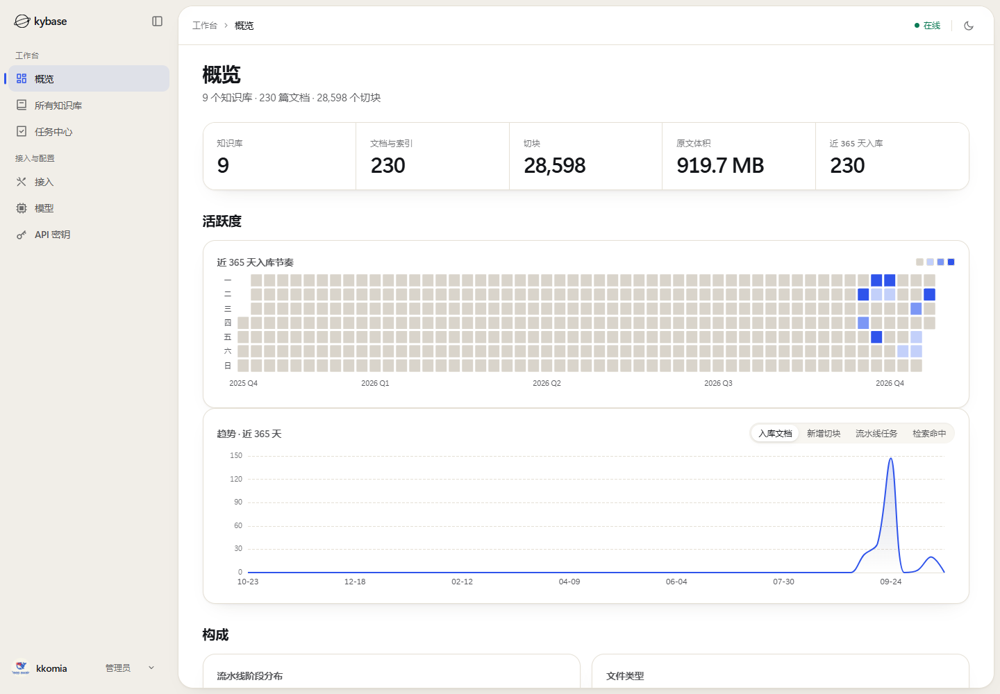
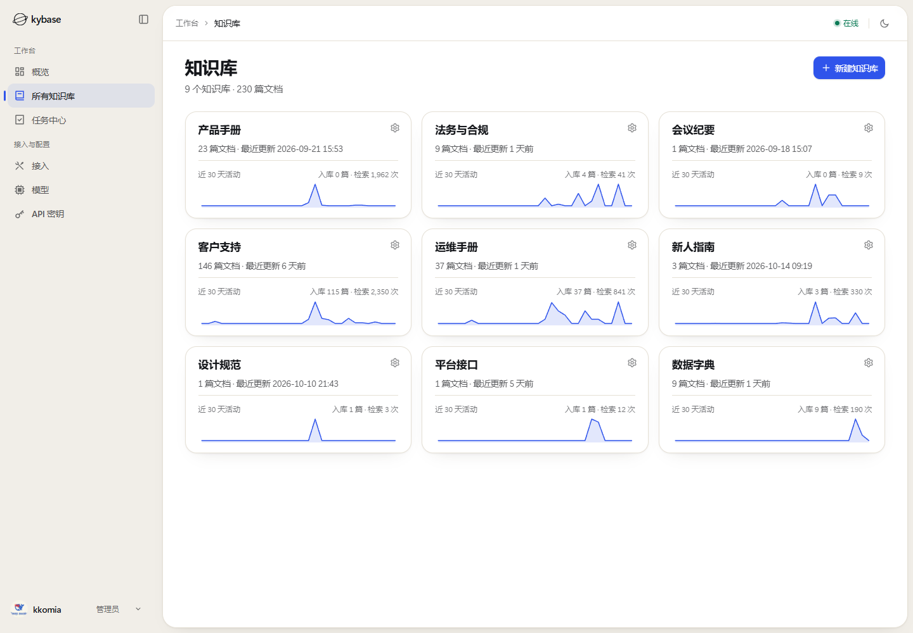
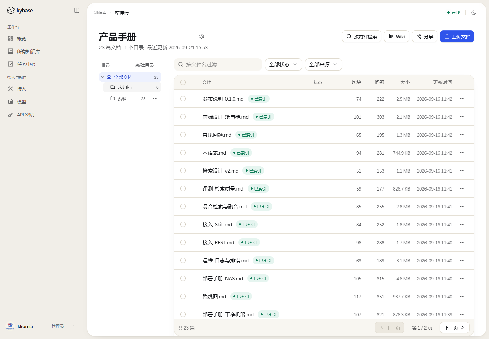
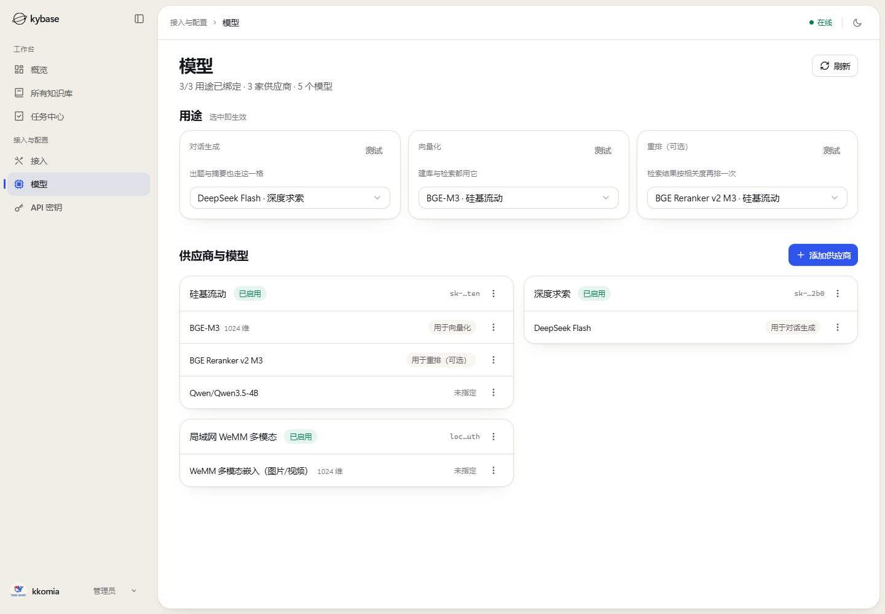
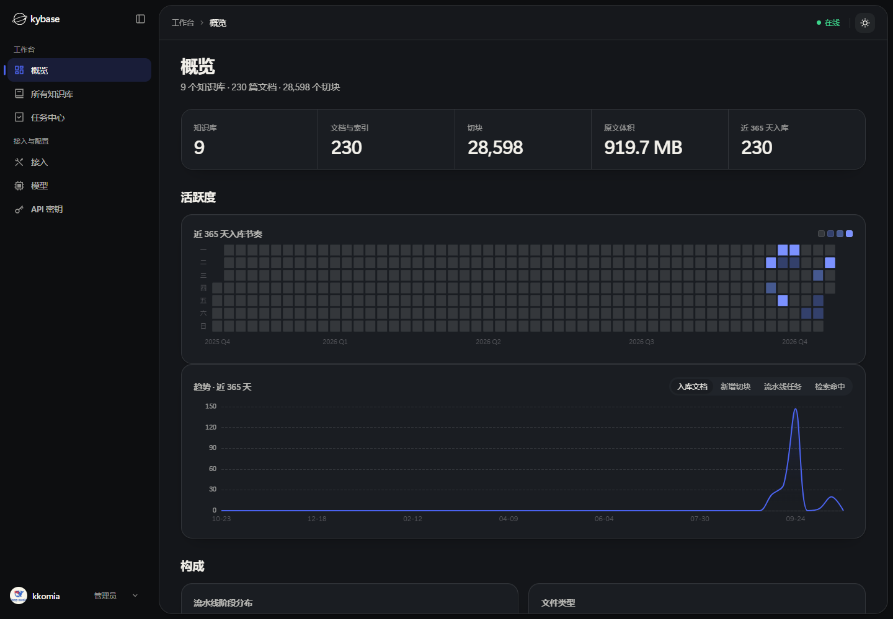

摄入：所有格式先变成 Markdown
上传、逐文件探测、解析、切块、向量化、索引。异步流水线带租约与退避， 中途断了能接着跑；云端与本地解析按文件动态路由。
kybase 是自托管的知识库服务：把文件摄入成索引，检索时先给判定、再给 带出处的原文片段。它不生成回答，只把证据交给你的 Agent。
keep 5
min_score 0.42
per_doc 2

回答可以生成，出处不能。
Agent 需要的不是一个更像人的答案，而是一段它引用得起、你核得动的原文。
大多数检索只回一串分数。kybase 先回答另一个问题：这份资料到底答不答得上。
fit 是内容结论，none 不是故障。
summary 一句话说清候选与收敛结果，distribution 给出分布，
decision 记录这次按什么收敛。原文排在它们之后。
页码跟着文档自己的分页标记走；对不上就返回 null——报一个翻不到原文的页码，
比不报更糟。每条命中还标出是哪条通道捞上来的。
“嵌入维度建议不超过 2000，推荐 1024……”
keep 是一页几条，top_k 是这次能翻到的总量。
按 offset / next_offset 翻到 null，
判定在每一页上逐字相同。
摄入、切块、检索、引用——四步都发生在服务端，调用方看到的是一份可核对的响应。
上传、逐文件探测、解析、切块、向量化、索引。异步流水线带租约与退避， 中途断了能接着跑；云端与本地解析按文件动态路由。
一块文本带着标题路径与页码离开原文。页码与文档自己的分页标记不自洽时， 宁可留空，也不报一个翻不到的页。
向量与 BM25 各自出候选，RRF 融合之后先看分布，再决定留几条。
命中太多时按 keep / min_score / per_doc 收敛。
调用方拿到的是片段、页码、通道与分数。判定说资料答不上，就不该拿这几条噪声编答案。
同一个检索、同一个判定、同一把 API Key。接入方式不同，返回的东西完全一样。
{
"mcpServers": {
"kybase": {
"type": "http",
"url": "http://kb.example.com:8765/mcp",
"headers": {
"Authorization": "Bearer <你的 API Key>"
}
}
}
}/mcp；每个请求都要凭据，没有匿名放行。serverInfo.version 带工具面指纹，客户端据此判断契约有没有变过。curl -sS -X POST http://kb.example.com:8081/api/v1/search \
-H "Authorization: Bearer $KYBASE_API_KEY" \
-H "Content-Type: application/json" \
-d '{
"query": "嵌入模型怎么标定？",
"kb_ids": ["kb_xxx"],
"top_k": 5
}'/api/v1，路径即版本；OpenAPI 在 /api/v1/openapi.json。kb_ids 必填；判定与原文在同一个响应里，顺序固定。skills/
├─ SKILL.md # 工作流、工具用途、回答纪律
└─ scripts/ # 纯 REST 查询脚本，不依赖 MCP
# 放进 Agent 的技能目录后，它先读判定，再读原文摄入看进度、检索看命中、模型看用途、任务看失败。真实运行截图，数据来自演示实例。




带 docker 的干净机器，四件套一起起；已有 PostgreSQL 与 MinIO 的机器，只起应用层。
PostgreSQL（pgvector）、MinIO、后端与前端，四个服务一起。
模型身份由注册表承担，不塞进环境变量。没登记，建库会被拒。
文件进去，摄入流水线自己跑；断了能接着跑。
建 API Key，按库给范围；MCP、REST、Skill 用同一把。
git clone https://github.com/kkomia/kybase.git
cd kybase
docker compose -f deploy/docker-compose.yml up -d --build
# 界面 http://localhost:8080
# 健康 http://localhost:8080/api/v1/health四件套这份 compose 尚未在干净机器上整体实测；作者机器上长期运行的是三件套（接外部 PostgreSQL 与 MinIO）。两档部署的差异写在 部署指南里。